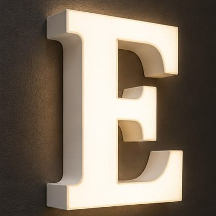
Białe boki
Klasyczne, jasne wykończenie.
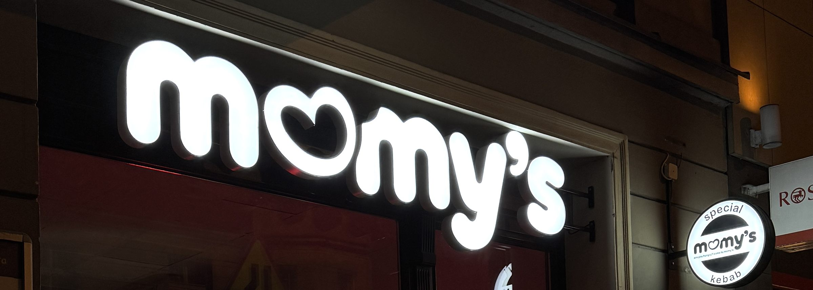
Litery Frontlit LED – produkcja, personalizacja, dostawa i montaż reklam świetlnych
Wykonujemy profesjonalne litery podświetlane Frontlit, czyli przestrzenne litery reklamowe z podświetlanym licem, przeznaczone do oznakowania firm, sklepów, restauracji, biur, salonów usługowych oraz budynków komercyjnych.
Produkujemy litery LED na zamówienie w różnych technologiach, rozmiarach, kolorach i wariantach wykończenia. Oferujemy zarówno niewielkie litery z druku 3D, jak i duże litery przestrzenne z bokami aluminiowymi. Realizujemy oznakowanie do wnętrz i na zewnątrz, z możliwością dostawy, montażu i instalacji.
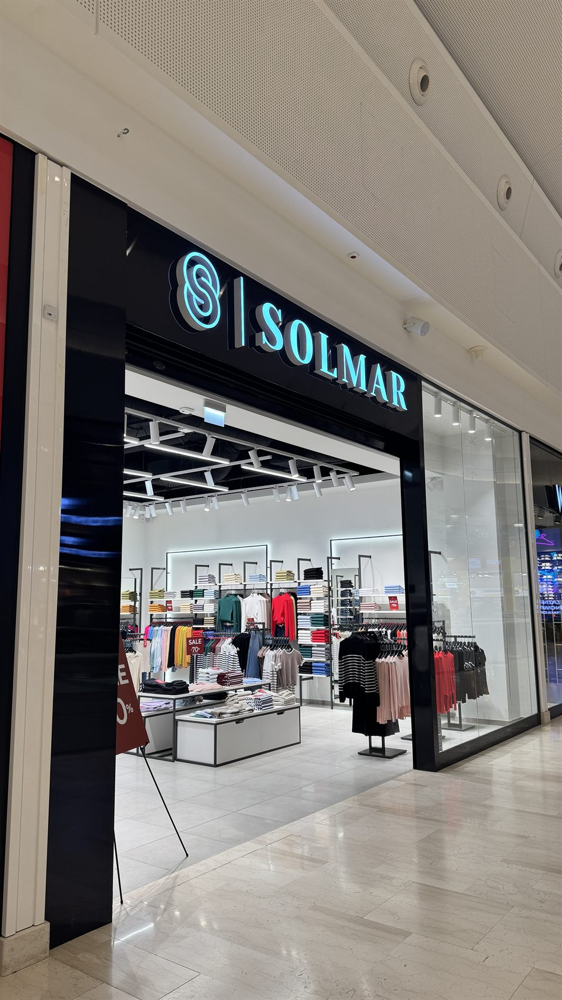
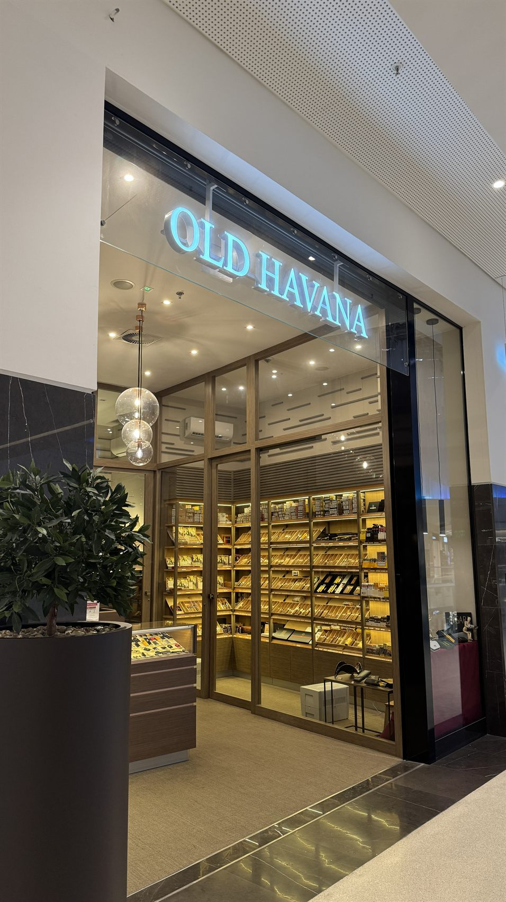
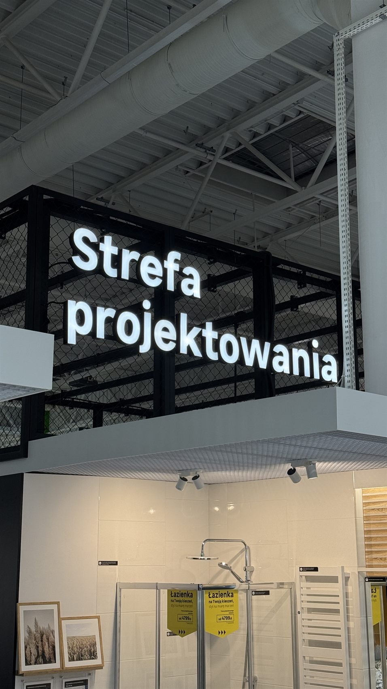
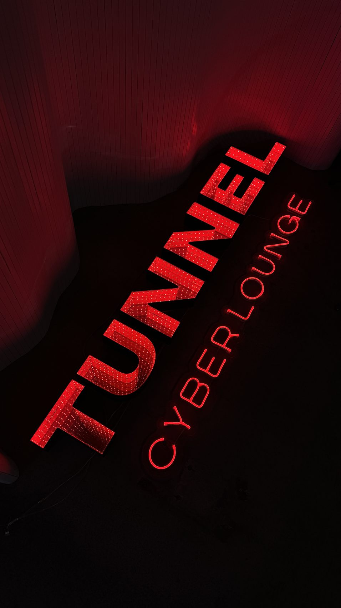
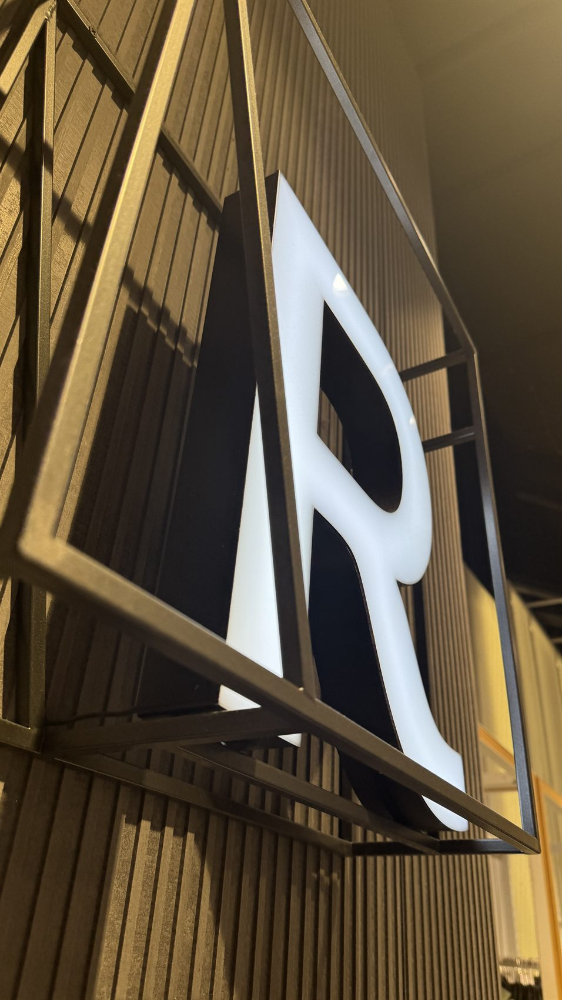
Litery Frontlit to litery przestrzenne, których przednia powierzchnia, czyli lico, jest podświetlana od wewnątrz za pomocą diod LED. W odróżnieniu od liter Backlit (Halo), światło jest widoczne przede wszystkim z przodu. Dzięki temu napis pozostaje wyrazisty po zmroku i pełni funkcję reklamy świetlnej.
W produkcji wykorzystujemy m.in. plexi opalową, tworzywa ASA i PETG, aluminium oraz PCV. Oświetlenie naszych liter jest zasilane napięciem 12 V DC.
Korpusy niewielkich liter wykonujemy na drukarkach 3D z filamentów ASA lub PETG. Technologia umożliwia precyzyjne odwzorowanie napisów, krojów pisma i logotypów. Standardowo realizujemy w tej technologii litery o wysokości do około 25 cm, a ich głębokość dobieramy indywidualnie do projektu i układu LED.
Litery 3D można wykonywać do wnętrz oraz na zewnątrz, po odpowiednim doborze materiałów, uszczelnień i sposobu instalacji.

Klasyczne, jasne wykończenie.
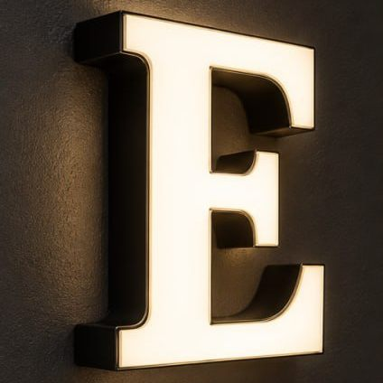
Wyrazisty kontrast z podświetlonym licem.
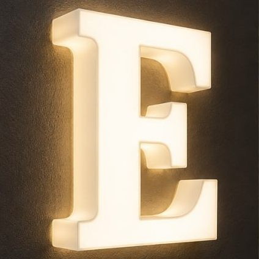
Dodatkowy efekt rozświetlenia korpusu.
Drugą technologią są litery przestrzenne z profilowanymi bokami z taśmy aluminiowej. Jest to trwałe rozwiązanie do szyldów firmowych, dużych logotypów, elewacji oraz reklam świetlnych. Wykonujemy litery od około 10 cm wysokości, również w bardzo dużych rozmiarach – bez jednego sztywnego limitu; konstrukcję dobieramy do projektu.
| Głębokość boku | Dostępność |
|---|---|
| 4, 5, 6, 7, 8 i 10 cm | Warianty standardowe |
| Powyżej 10 cm | Na indywidualne zamówienie |
Oferujemy taśmy aluminiowe z rantem (widocznym profilem mocującym lico) oraz bez rantu (bardziej minimalistyczne wykończenie). Dobór zależy od projektu, wymiarów i wymagań konstrukcyjnych.
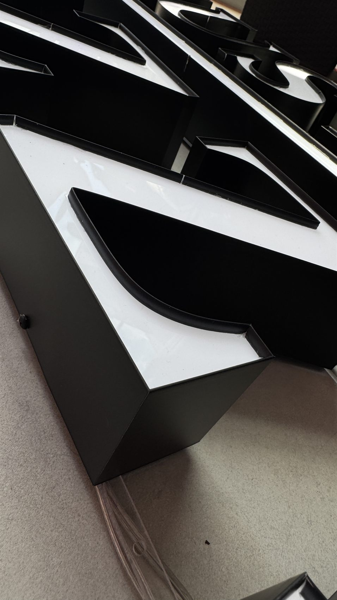
Dostępne są także inne kolory na zamówienie. Boki możemy okleić folią Oracal lub pomalować natryskowo na wybrany kolor według wzorników RAL albo NCS. Pozwala to dopasować litery do identyfikacji wizualnej firmy.
Standardowo dostępne są:
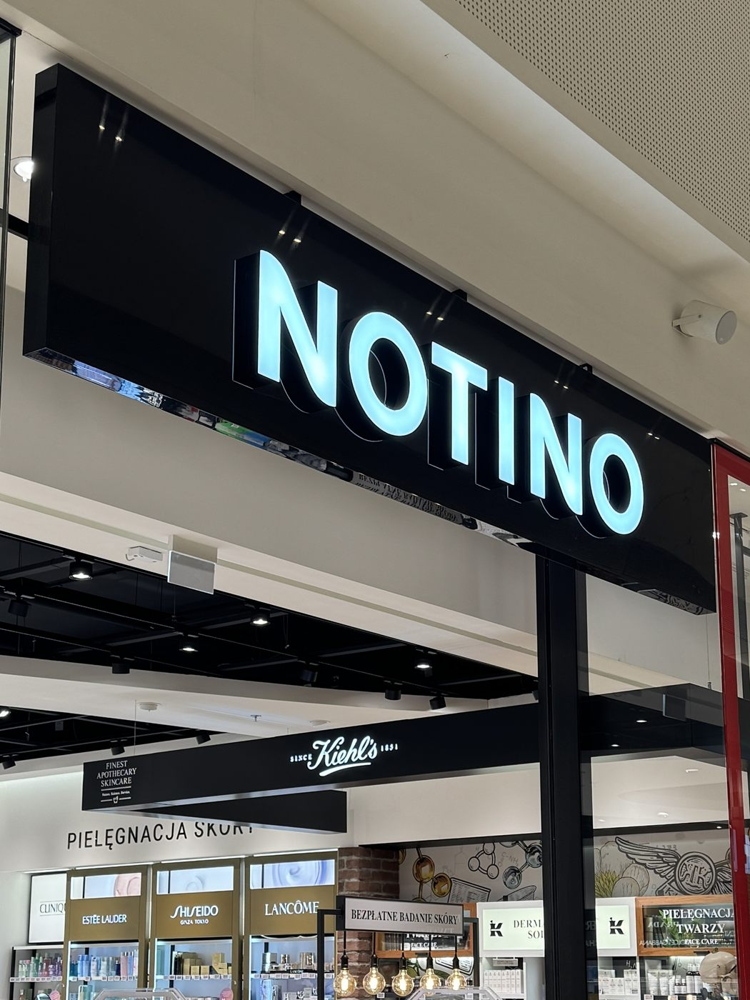
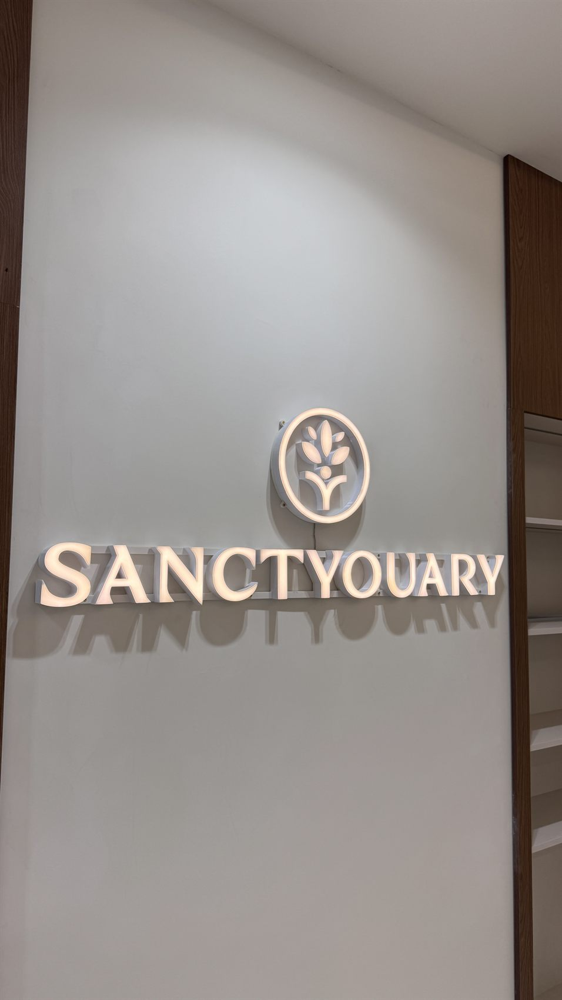
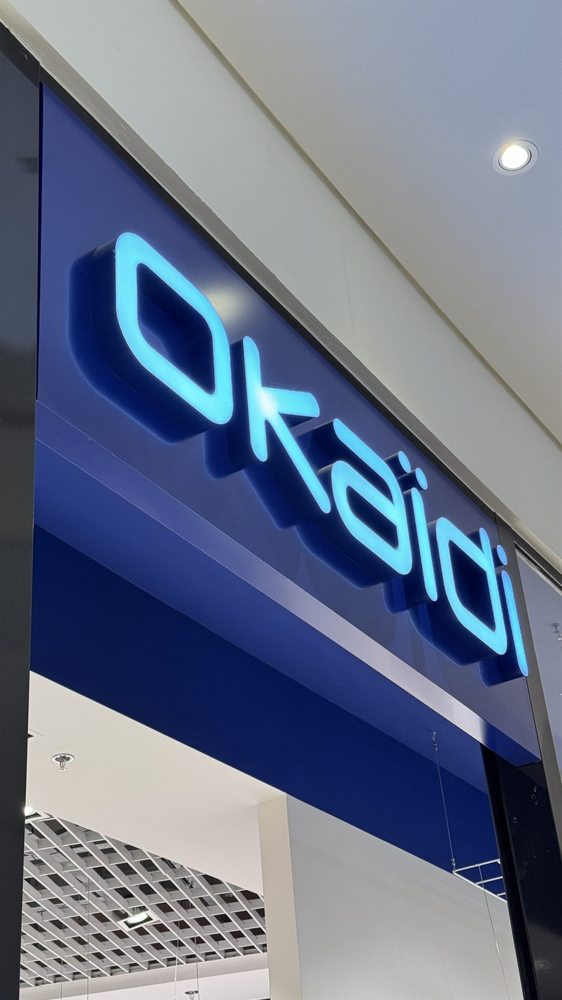
Przednią powierzchnię liter wykonujemy z plexi Perspex białej opalowej (mlecznej). Materiał rozprasza światło, a prawidłowo dobrana głębokość korpusu oraz rozmieszczenie diod pomagają uzyskać jednolitą powierzchnię świecenia, bez widocznych punktów LED.
Lico może być dodatkowo personalizowane kolorystycznie, z uwzględnieniem wymaganego odcienia i efektu świetlnego.
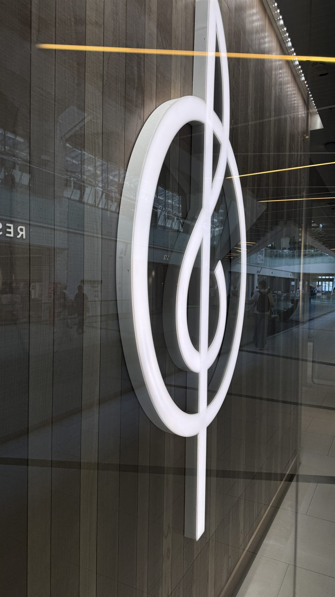
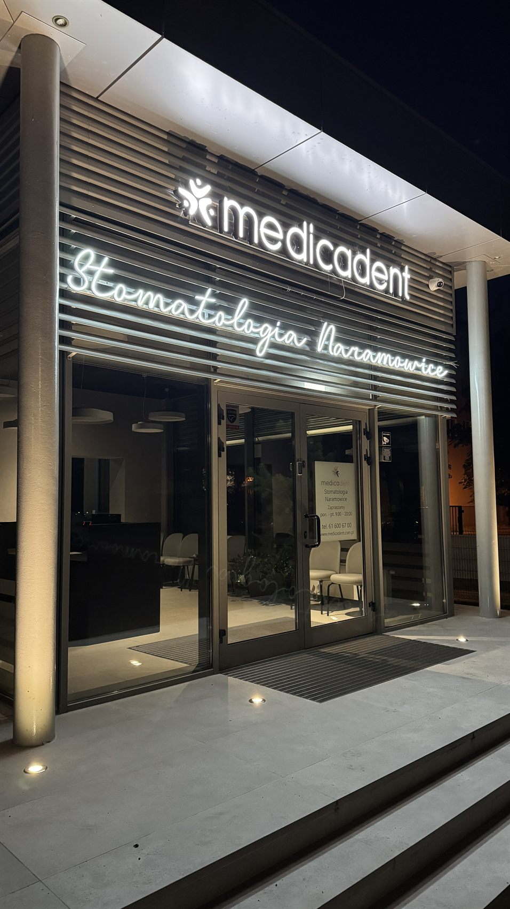
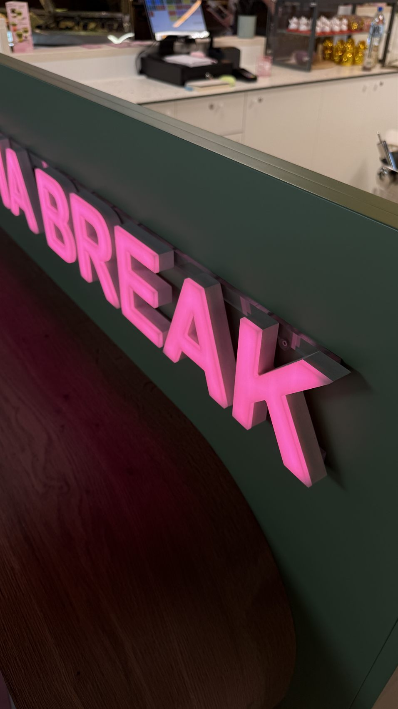
Dla liter kolorowych stosujemy odpowiednie kolorowe taśmy lub moduły LED, albo białe podświetlenie w połączeniu z folią Oracal 8500 na licu. Folia przeznaczona do grafik podświetlanych umożliwia uzyskanie wybranego koloru lub odcienia. Dokładne odwzorowanie barwy zależy od źródła światła, materiału i folii; przy wymagających kolorach firmowych zalecamy próbę.
Tył liter wykonujemy z PCV, które stanowi bazę montażową dla oświetlenia. W większych literach wykorzystujemy zwykle moduły LED, natomiast w mniejszych – taśmy LED. Rozmieszczenie źródeł światła dobieramy tak, aby uzyskać równomierny efekt świecenia.
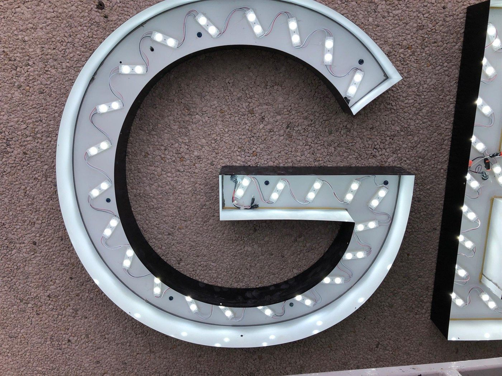
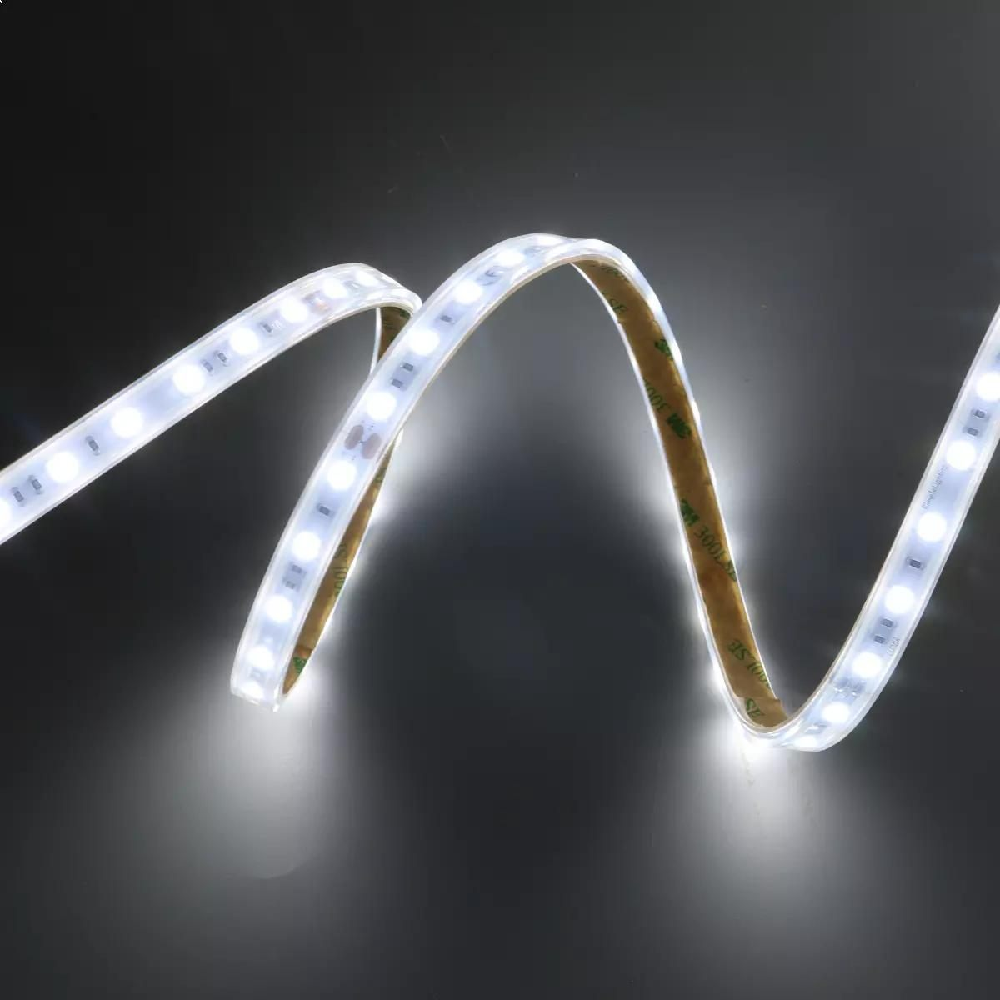
Wszystkie nasze systemy oświetlenia liter Frontlit pracują przy napięciu 12 V DC. Podłączenie do gniazdka sieciowego 230 V wymaga odpowiedniego zasilacza LED.
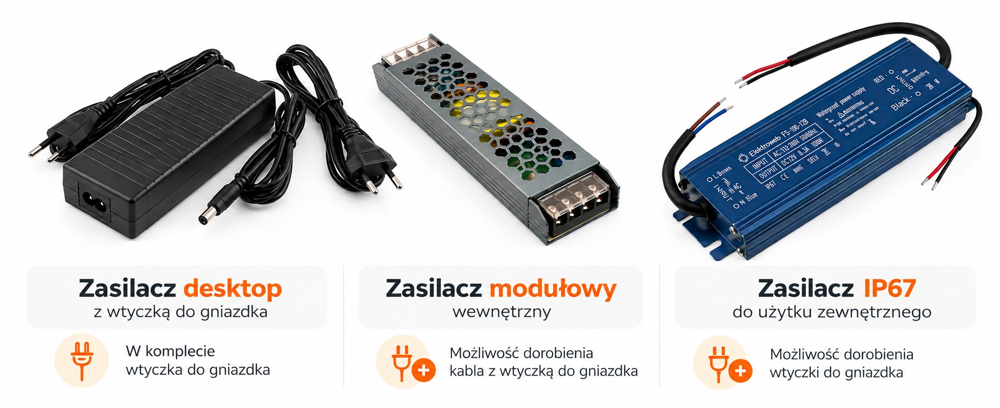
Litery możemy dostarczyć jako osobne elementy lub gotowy zestaw na dopasowanej podkonstrukcji.
Rodzaj podkładu i sposób mocowania ustalamy indywidualnie, w zależności od wielkości liter, podłoża i miejsca instalacji.
Indywidualny montaż liter do ściany lub elewacji.
Ograniczona widoczność konstrukcji.
Rozwiązania do większych i bardziej wymagających napisów.
Z kompozytu aluminiowego (Dibond) lub innych tworzyw sztucznych.
Litery Frontlit osadzone na kompletnej konstrukcji szyldowej, umożliwiającej ukrycie przewodów.
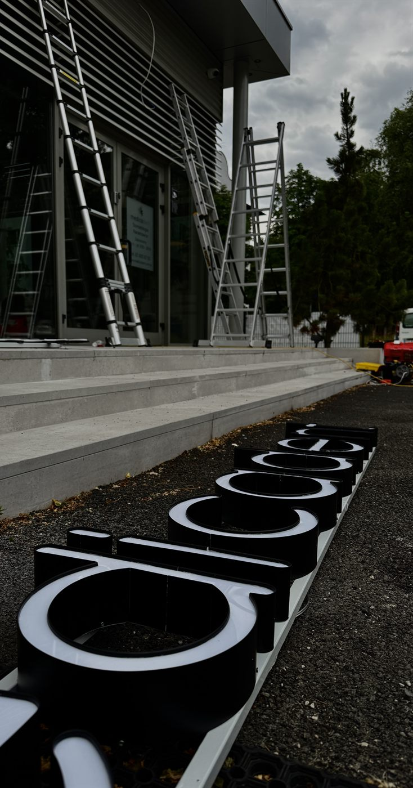
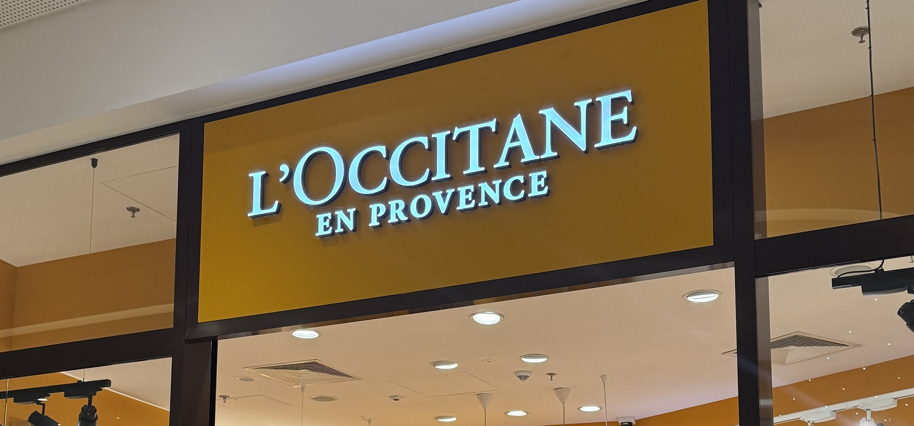
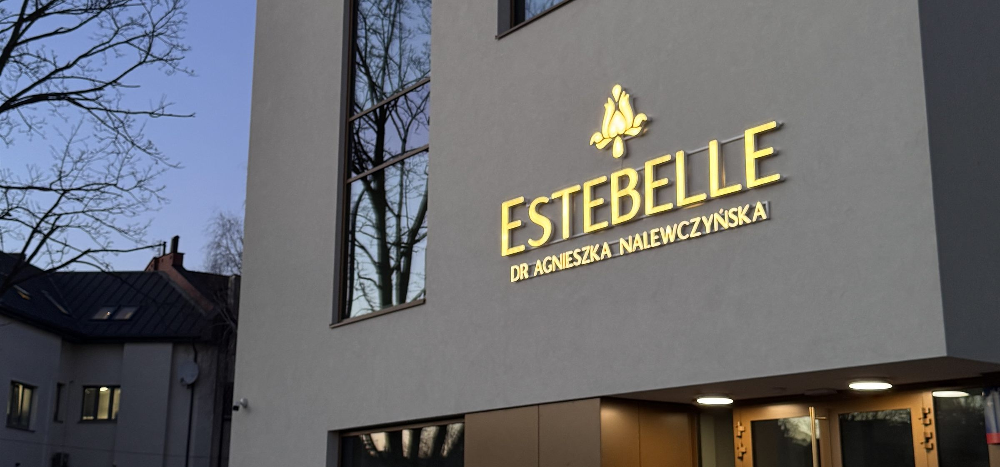
Dla instalacji zewnętrznych dobieramy materiały, zabezpieczenia elektryczne i mocowania odpowiednie do warunków atmosferycznych. Możliwe jest przygotowanie liter do długotrwałej pracy, także 24/7, po uwzględnieniu wymagań zasilania i chłodzenia.
Oferujemy możliwość naprawy i rekonstrukcji istniejących liter reklamowych. W zależności od stanu technicznego wymieniamy moduły lub taśmy LED, zasilacze, lica z plexi, elementy obudowy oraz pojedyncze uszkodzone litery. Możemy także odtworzyć brakujące elementy na podstawie istniejącego oznakowania.
Modernizacja pozwala przywrócić estetykę i sprawność reklamy bez konieczności wymiany całego szyldu, o ile stan konstrukcji na to pozwala.
Wykonujemy litery Frontlit na podstawie firmowego logotypu, wybranej czcionki, napisu lub indywidualnego projektu. Możemy odwzorować znaki graficzne, połączyć litery z innymi elementami reklamy i dopasować kolor boków oraz podświetlenia do identyfikacji wizualnej marki.
Realizujemy oznakowanie sklepów, hoteli, restauracji, salonów kosmetycznych, biur, punktów usługowych, galerii handlowych i obiektów przemysłowych.
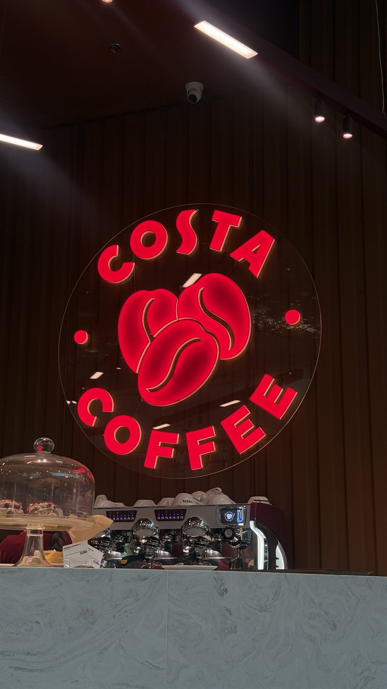
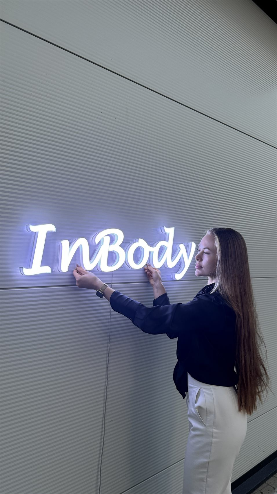
Oferujemy produkcję liter oraz – zgodnie z zakresem zamówienia – przygotowanie konstrukcji, dostawę, montaż i instalację. Uwzględniamy rodzaj podłoża, wysokość montażu, doprowadzenie zasilania i wymagania techniczne.
Można zamówić same litery do samodzielnego montażu albo kompletny szyld z podkonstrukcją i usługą instalacji.
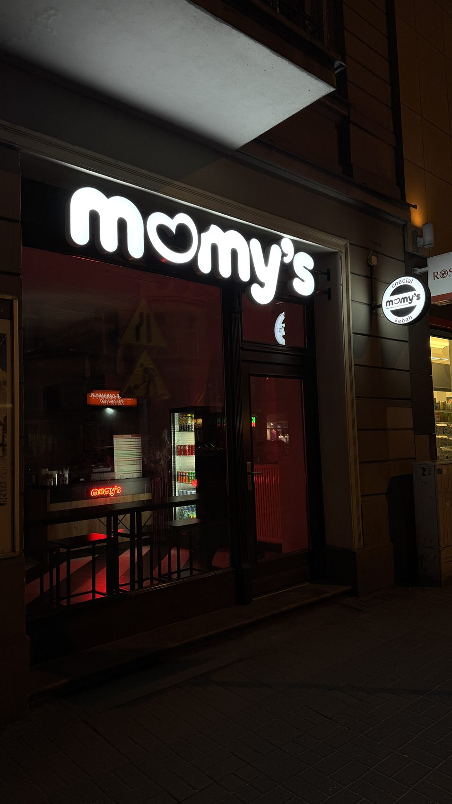
momy'sBiałe litery na czarnym szyldzie · nocą NOTINOTurkusowe litery na czarnym szyldzie COSTA COFFEELogo na okrągłej, transparentnej płycie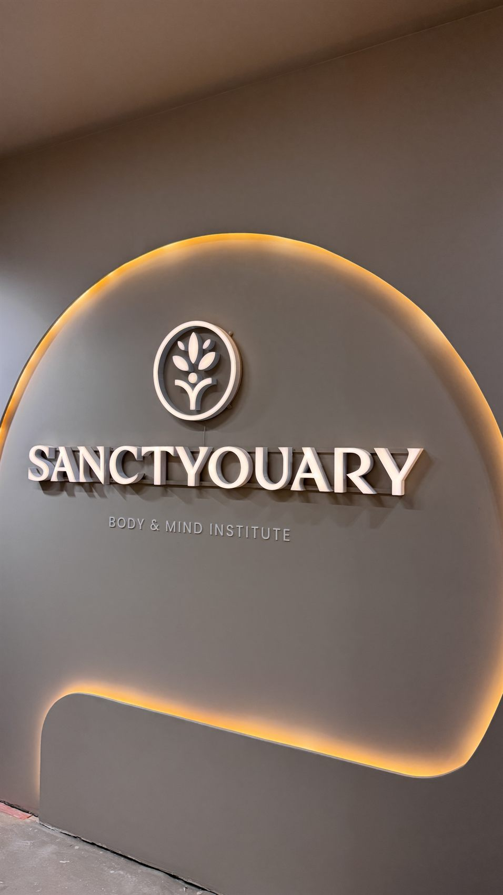
SANCTYOUARYLogo i napis na ścianie z podświetlonym łukiem OkaïdiNiebieskie litery na granatowym szyldzie medicadentLogo i napis na elewacji · nocą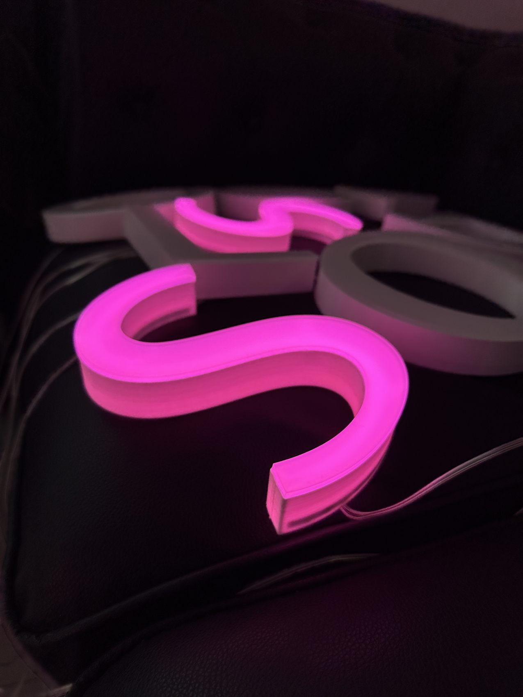
Różowe literyBoki przepuszczające światło OLD HAVANATurkusowe litery na szklanym pasie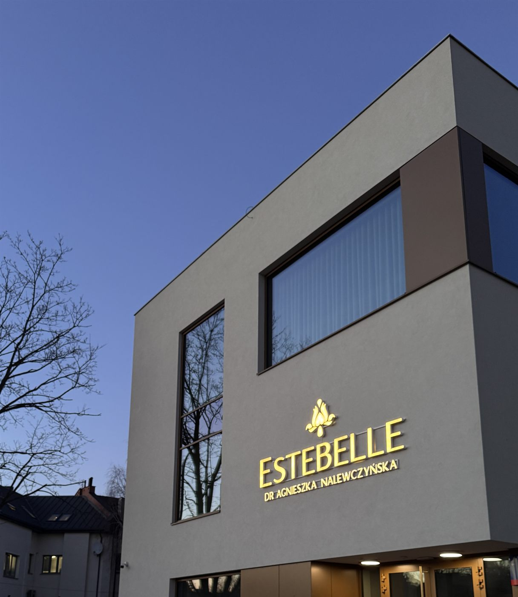
ESTEBELLEZłote litery na elewacji · o zmierzchu Klucz wiolinowySymbol z białym, świecącym licem SOLMARLitery i logo na czarnym szyldzie Różowe podświetlenieLitery na zielonej ladzie TUNNEL Cyber LoungeCzerwony napis w ciemnym wnętrzu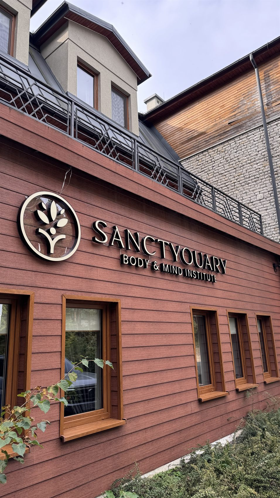
SANCTYOUARYLogo i napis na drewnianej elewacji InBodyBiałe litery pisane na ścianie Strefa projektowaniaBiałe litery na czarnej siatce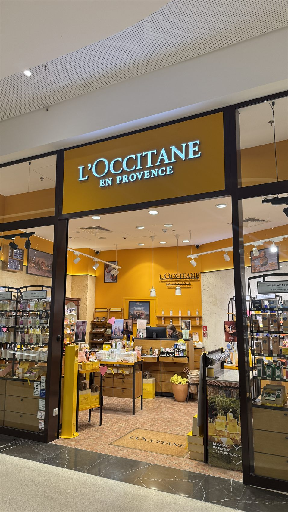
L'OCCITANELitery na żółtym szyldzie Litera RLitera w czarnej, metalowej ramie SANCTYOUARYLogo i litery z białymi bokami Czarne boki, białe licoLitery ułożone na podłodzeFrontlit świecą przez przednie lico, natomiast Backlit (Halo) podświetlane są od tyłu, tworząc poświatę na podłożu.
Litery z druku 3D wykonujemy do około 25 cm wysokości. Litery z bokami aluminiowymi – od około 10 cm, również w bardzo dużych wymiarach, z konstrukcją dobieraną do projektu.
Tak. Oferujemy różne kolory boków i światła, folie Oracal 8500 oraz malowanie boków według RAL i NCS. Dokładny efekt kolorystyczny zależy od zastosowanych materiałów.
Tak, po odpowiednim doborze materiałów, zabezpieczeń i konstrukcji montażowej.
Tak, możliwe jest przygotowanie instalacji do pracy 24/7, pod warunkiem odpowiedniego doboru podzespołów i warunków eksploatacji.
Tak. Litery można zamówić z dostawą, montażem i instalacją, zgodnie z ustalonym zakresem.
Tak. Oferujemy wymianę oświetlenia, zasilaczy, lic i wybranych elementów obudowy oraz rekonstrukcję uszkodzonych liter.
Szukasz profesjonalnych liter podświetlanych LED, świecącego logotypu firmowego lub reklamy świetlnej na elewację? Wykonujemy litery Frontlit na zamówienie w technologii druku 3D i z bokami aluminiowymi, w różnych rozmiarach, kolorach i wykończeniach.
Prześlij nam logo, projekt lub napis, określ orientacyjne wymiary oraz miejsce montażu. Pomożemy dobrać technologię wykonania, głębokość liter, kolor podświetlenia i konstrukcję.
+48 730 627 143